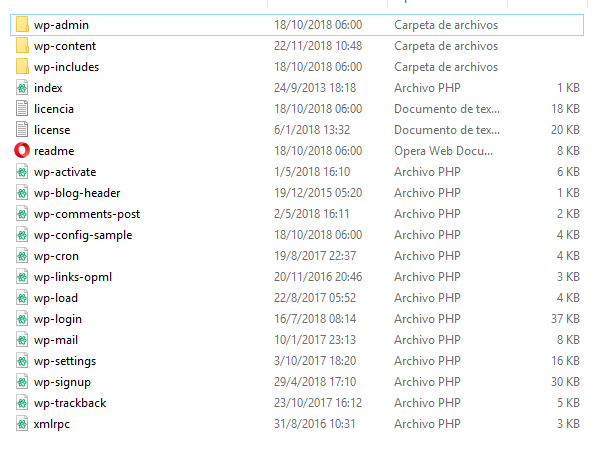
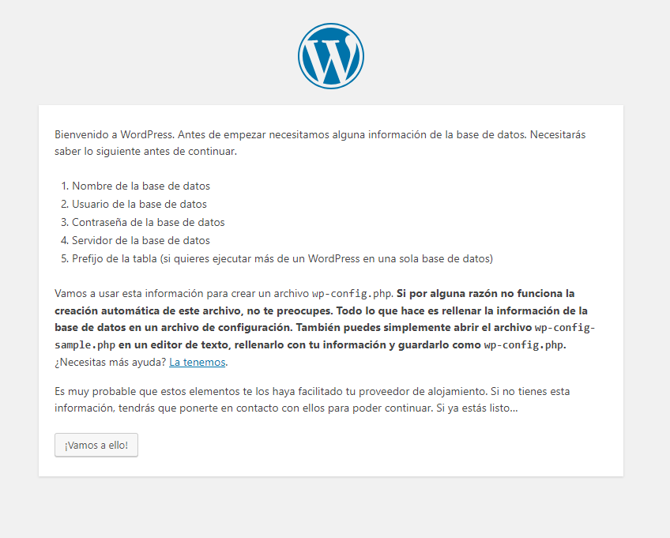
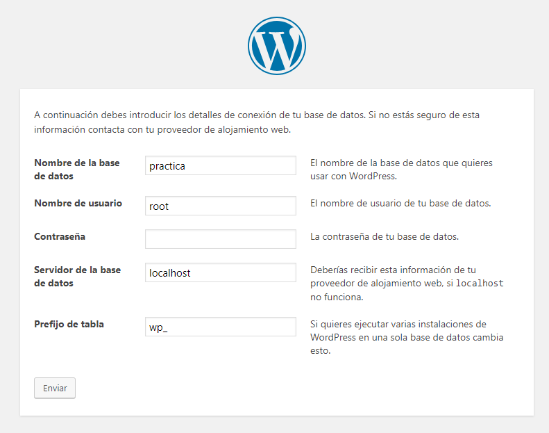
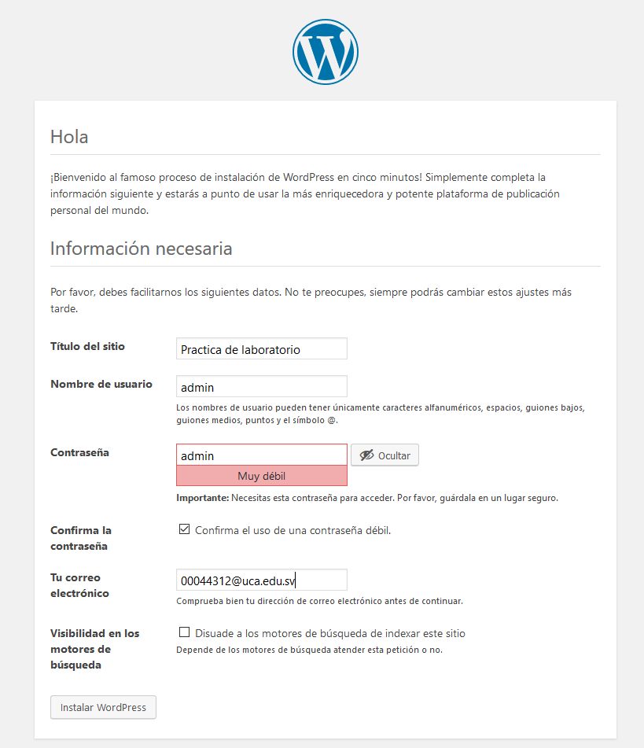
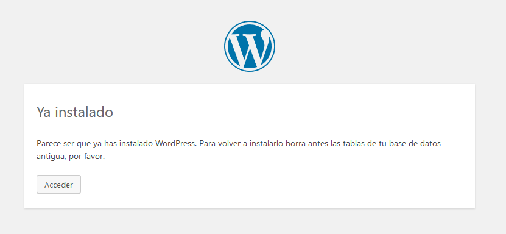
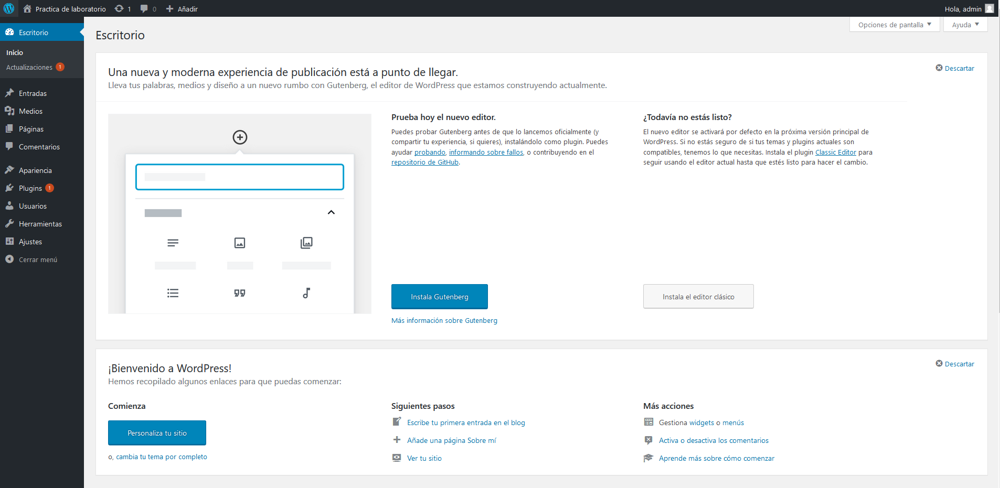

- Primero no dirigiremos al siguiente enlace: wordpress
- Daremos click al botón Get Wordpress, para comenzar la descarga
- En Mysql crearemos la base de datos para nuestro sitio web. Para nuestro ejemplo la nombraremos
practica
- Crearemos la carpeta
wordpress en:
- Si se usa Xampp:
htdocs
- Si se usa Apache:
/var/www/html
-
En la carpeta que creamos en el punto anterior copiaremos el contendio de la carpeta
wordpress que descargamos del punto 2.

-
Abriremos un navegador e ingresaremos a la siguiente dirección
localhost/wordpress, para comenzar con la instalación. Nos mostrara lo siguiente:

-
Completaremos el siguiente formularios con los datos de nuestra base de datos.

-
Daremos click en
Ejecutar Instalación
-
En el siguiente formulario colocaremos las credenciales para nuestro sitio.

Daremos click en
Instalar WordPress
-
Tendremos listo nuestro sitio web.

Para acceder al panel de adminstración de nuestro sitio deberemos acceder en la siguiente dirección
http://localhost/wordpress/wp-login.php
Colocaremos nuestras credenciales e ingresaremos al administrador de nuestro sitio:
